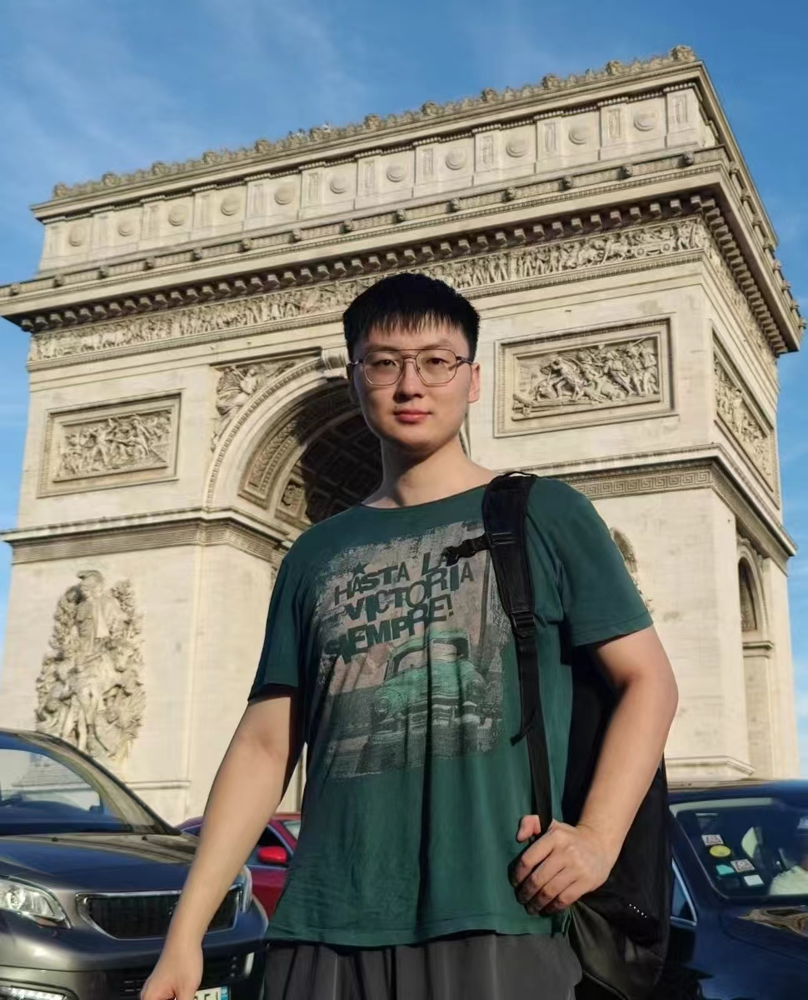

|
I am a Research Scientist (since Feb 2025) at the VITA (Visual Intelligence for Transportation) Lab at EPFL (École Polytechnique Fédérale de Lausanne). I feel extremely fortunate to work under the supervision of Prof. Alexandre Alahi. My research focuses on autonomous mobility and robotics, as well as developing innovative computer vision and machine learning solutions. Before this, I worked as a Postdoctoral Researcher (2024–2025) at the Chinese University of Hong Kong (CUHK) and completed my PhD (2020–2023) at the City University of Hong Kong (CityUHK) with Early Graduation. During my PhD, I focused on visual perception in the context of autonomous driving, thoroughly addressing two-dimensional challenges posed by out-of-distribution data and domain shifts. I was also fortunate to have had the opportunity to work with Prof. Bo Han. I completed my undergraduate studies (2016–2020) at Tianjin University. I am open to research collaborations. If you are interested in my previous work, please don't hesitate to contact me. Email / CV / Google Scholar / Github |
 |
{kind=link}
💥 News
|
📑 Selected Publication |
|
|
ArXiv Preprint, 2025 Wuyang Li, Zhuy Yu, Alexandre Alahi project page / paper / codes (coming) Key Words: 3D Semantic Occupancy Prediction; Dense Object Detection TL;DR: VoxDet address semantic occupancy prediction with an instance-centric formulation inspried by dense object detection, which uses a VoxNT trick freely transferring voxel-level class labels to instance-level offset labels. |

|
European Conference on Computer Vision, ECCV, 2024, ORAL Wuyang Li, Xinyu Liu, Jiayi Ma, Yixuan Yuan paper / codes / video Key Words: Open-Vocabulary Object Detection; Diffusion Model TL;DR: A probabilistic pipeline modeling the subspace transfer among the object, image, and text subspaces with continual diffusion. |

|
Medical Image Computing and Computer Assisted Intervention, , MICCAI, 2024 Wuyang Li, Xinyu Liu, Qiushi Yang, Yixuan Yuan paper Key Words: Medical Video Generation; Semi-Supervised Diagnosis TL;DR: Enhancing the semi-supervised diganosis with generative medical videos, enabling the learning across image and video modalities jointly. |

|
Medical Image Computing and Computer Assisted Intervention, , MICCAI, 2024 Yifan Liu, Wuyang Li, Cheng Wang, Hui Chen, Yixuan Yuan paper Key Words: SAM; 3D Point Cloud Segmentation; Severely Limited Label TL;DR: Leveraging the SAM to address the severe label scarcity in 3D point cloud segmentation, enbaling good perfromance with only 0.1% label ratio. |

|
IEEE International Conference on Computer Vision (ICCV), 2023, ORAL Wuyang Li, Xiaoqing Guo, Yixuan Yuan paper / codes Key Words: Open-Set/ Domain Adaptive Object Detection TL;DR: Formulating a real-world friendly setting with out-of-distribution and domain shift, and addressing with high-order subgraphs. |

|
IEEE International Conference on Computer Vision (ICCV), 2023 Qiushi Yang, Wuyang Li, Paul Li, Yixuan Yuan paper / codes Key Words: Multimodal Pretraining; Masked Image Modeling TL;DR: Observing the failure in MIM when the informative foreground is limited, and turning to masking relation to solve this issue. |

|
IEEE Conference on Computer Vision and Pattern Recognition (CVPR), 2023 Wuyang Li, Jie Liu, Bo Han, Yixuan Yuan paper / codes/ video Key Words: Open Set Domain Adaptation; Causal Theory TL;DR: Driven by new observations, proposing a theoretically grounded method to tackle biased learning and cross-domain transfer with causality. |

|
IEEE Conference on Computer Vision and Pattern Recognition (CVPR), 2022, ORAL, Best Paper Finalist Wuyang Li, Xinyu Liu, Yixuan Yuan paper / codes / 知乎 Key Words: Domain Adaptive Object Detection; Graph Matching TL;DR: Reformulating domain adaptation as a graph matching problem among fine-grained cross-domain feature points. |

|
IEEE Conference on Computer Vision and Pattern Recognition (CVPR), 2022 Xinyu Liu, Wuyang Li, Qiushi Yang, Baopu Li, Yixuan Yuan paper / codes Key Words: Open Set Domain Adaptation; Noisy Label TL;DR: Exploring a more practical setting with noisy annotations in DAOD and solving by measuring the latent transferability of object noise. |

|
The Association for the Advance of Artificial Intelligence (AAAI), 2022, ORAL Wuyang Li, Xinyu Liu, Xiwen Yao, Yixuan Yuan paper / codes Key Words: Open Set Domain Adaptation; Graph-based Learning TL;DR: Discovering the key factor leading to the perforrmance drop in DAOD and addressing with cross-domain semantic-conditioned kernels. |

|
Medical Image Computing and Computer Assisted Intervention (MICCAI), 2022, ORAL, Early Accept Xinyu Liu, Wuyang Li, Yixuan Yuan paper / codes Key Words: Federated Learning; Noisy Label; Causal Theory TL;DR: Studying the recognition bias in federated object detection under noisy annotations, and addressing the bias with a novel causal intervention. |

|
IEEE Transactions on Pattern Analysis and Machine Intelligence (TPAMI), 2023, IF: 24.314 Wuyang Li, Xinyu Liu, Yixuan Yuan paper / codes Key Words: Domain Adaptive Object Detection; Hypergraph Matching TL;DR: Improving pair-wise SIGMA with high-order hypergraph, thereby addressing the domain misalignment with group-level adaptation. |

|
IEEE Transactions on Image Processing (TIP), 2022, IF: 11.041 Wuyang Li, Zhen Chen, Baopu Li, Dingwen Zhang, Yixuan Yuan paper / codes Key Words: Generic Object Detection; Graph-based Learning TL;DR: Discovering the heterogeneous feature demands between the classification and regression, and solving via task-decoupled designs. |

|
IEEE Transactions on Neural Networks and Learning Systems (TNNLS), 2023 Xinyu Liu, Wuyang Li, Yixuan Yuan paper / codes Key Words: Source-free Domain Adaptive Object Detection; Causal Theory TL;DR: Identifying the bias at the data, model and prediction levels in SFDA, and sovling with causal intervention. |
📄 Other PublicationImage/Video Generative Models
Brain MRI Analysis
LLM Agent
3D Vision
Graph-based Learning
Medical Imaging Analysis
|
💡 ServiceJournals Reviewer
Conferences Reviewer
|
🏅 Selected Honors
|
🎓 Education |

|
Sep. 2016 - Jun. 2020： Bachelor's degree of Communication Engineering. GPA: 3.83/4.00, 91.3/100, Ranking 6/120 |

|
Sep. 2019 - Jun. 2020: Exchanging program of Electrical and Computer Engineering. Supervisors: Prof. Zhiying Zhou Complete the project: Towards Webpage-based Augmentation Reality (AR) |

|
Sep. 2020 - Dec. 2023: Ph.D Study of Electrical Engineering. Supervisors: Prof. Yixuan Yuan |
👥 Leadership |

|
To gain a deeper understanding of technology, I founded ScholaGO Education Technology Company Limited (學旅通教育科技有限公司) with four co-founders to develop an innovative educational product aimed at converting static knowledge into an immersive, interactive, multi-modal adventure. Our company is supported by HKSTP, HK Tech 300, and Alibaba Cloud. My ultimate goal is to develop valuable technologies and products to improve the national happiness index. |
🎨 Personal Interests
|
|
We steal this website from this guy |